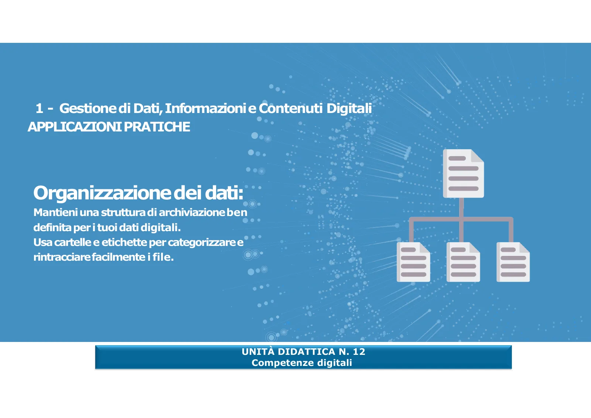
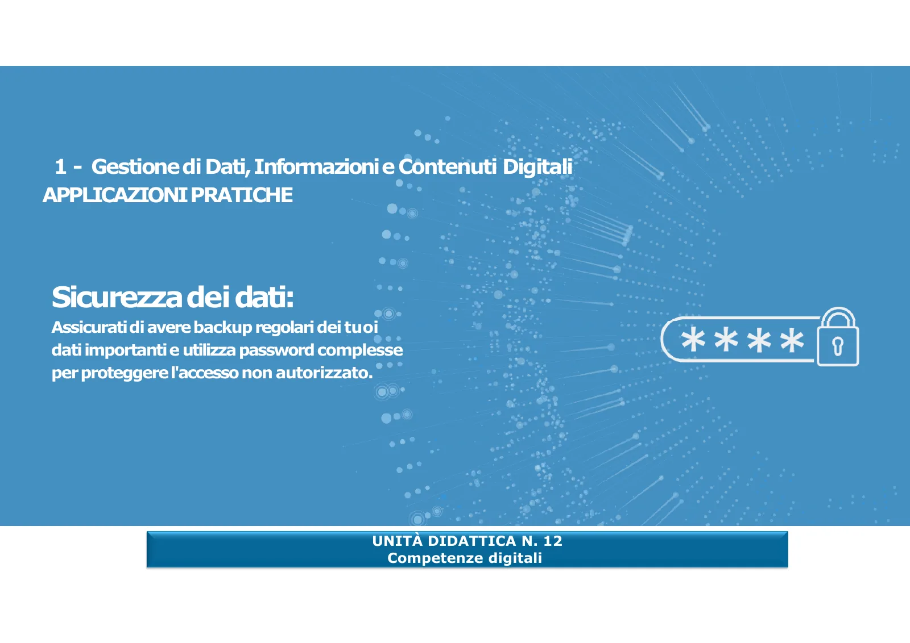
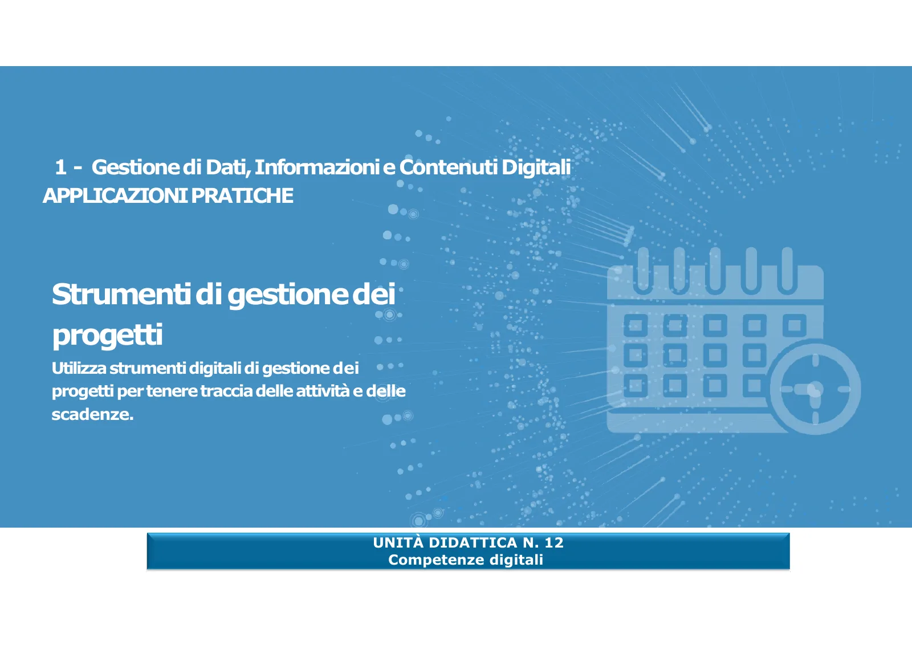
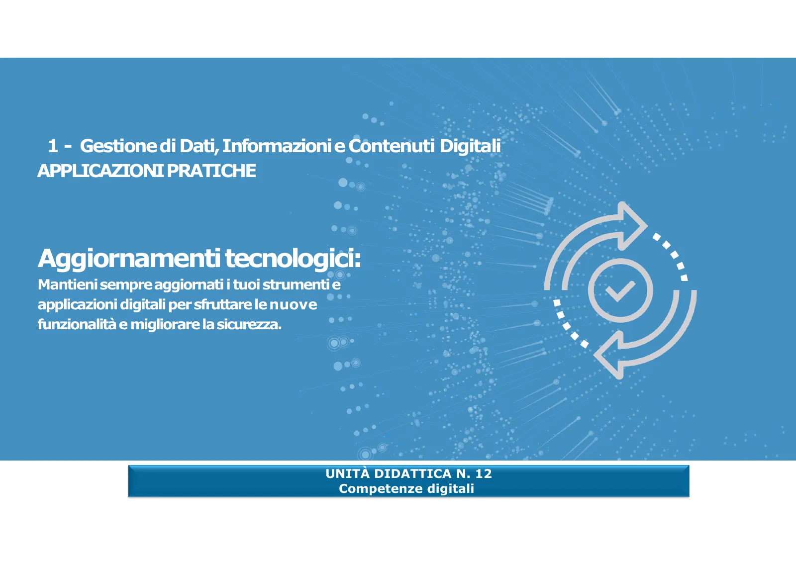
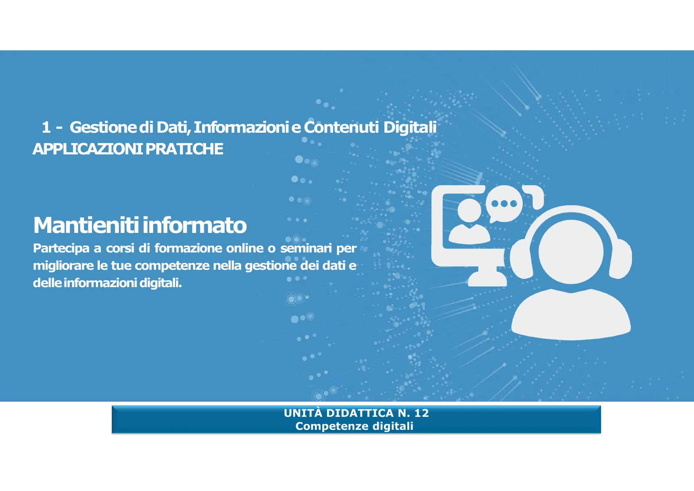

Parte B · mer 11 novembre · seconda metà (1h25) · 6 slide originali · 7 integrazioni essenziali + 8 facoltative
Organizzare, proteggere, pianificare
Seconda parte: le slide originali 6–11 su organizzazione, sicurezza, gestione dei progetti, aggiornamenti e formazione, con simulazioni ed esercizi pratici.
Le slide del modulo · le slide originali sono intatte, quelle con l’etichetta colorata sono integrazioni
UD12 · Competenze digitali · Incontro 1 di 4 · mercoledì 11 novembre 2026 · 3 ore online · parte B
Organizzare, proteggere, pianificare
Cartelle e nomi dei file, backup e password, strumenti per gestire progetti e scadenze, aggiornamenti e formazione continua: le abitudini che rendono affidabile il lavoro digitale.
Slide originali UD12 · 6–11+ simulazioni ed eserciziDocente: Ing. Antonio Adinolfi
Sfida: trovate in 30 secondi l’ultima bolletta della luce
Sul telefono o sul computer. Chi ci riesce come ha fatto? Chi non ci riesce, dove si è perso?

1 - Gestionedi Dati,Informazionie Contenuti Digitali APPLICAZIONIPRATICHE Organizzazionedei dati: Mantieniuna strutturadi archiviazioneben definitaper i tuoi dati digitali. Usa cartelle e etichette per categorizzaree rintracciarefacilmente i file.
Una struttura di cartelle per la vostra attività
Poche cartelle principali, numerate per tenerle in ordine, e sempre le stesse su tutti i dispositivi.
Non più di 3 livelli di profondità.
Una cartella «00_Da_smistare» da svuotare ogni venerdì.
Etichette (o tag) per ritrovare file che appartengono a più temi, ad esempio «urgente» o «2026».
In quale cartella va questo file?
Nomi dei file: perché anno-mese-giorno

1 - Gestionedi Dati,Informazionie Contenuti Digitali APPLICAZIONIPRATICHE Sicurezzadei dati: Assicuratidi averebackup regolari dei tuoi dati importantie utilizza password complesse per proteggerel'accesso non autorizzato.
Password complesse: proviamole
La regola del backup 3-2-1
3
copie dei dati
l’originale + due copie di backup
2
supporti diversi
es. disco del PC + disco esterno
1
copia fuori sede
es. cloud o disco tenuto altrove
Sincronizzare non è fare backup. La sincronizzazione copia anche cancellazioni e file cifrati da un ransomware. E un backup non provato non è un backup: ripristinate un file ogni tanto.
Arriva l’incidente: i vostri dati si salvano?

1 - Gestionedi Dati,Informazionie Contenuti Digitali APPLICAZIONIPRATICHE Strumentidi gestionedei progetti Utilizza strumentidigitali di gestione dei progetti per tenere traccia delle attività e delle scadenze.
Gestire un progetto: la bacheca Kanban
Strumenti gratuiti per progetti e scadenze
Bisogno
Strumento
Esempi
Ricordare le scadenze
Calendario con promemoria
Google Calendar, Outlook
Lista delle cose da fare
App di attività
Google Tasks, Microsoft To Do
Vedere a che punto sono
Bacheca Kanban
Trello, Planner
Tempi e costi
Foglio di calcolo
Fogli Google, Excel, LibreOffice Calc
Lavorare con un socio
Cartella condivisa + commenti
Google Drive, OneDrive
Basta uno strumento usato tutti i giorni: meglio un calendario aggiornato che tre app abbandonate.

1 - Gestionedi Dati,Informazionie Contenuti Digitali APPLICAZIONIPRATICHE Aggiornamentitecnologici: Mantienisempreaggiornati i tuoi strumentie applicazioni digitali per sfruttare le nuove funzionalità e migliorare la sicurezza.
«Ricordamelo domani»: perché non rimandare gli aggiornamenti
1ScopertaViene trovata una falla nel software.
2CorrezioneIl produttore rilascia la patch.
3PubblicitàLa falla diventa nota anche ai criminali.
4AttacchiColpiscono chi non ha aggiornato.
Dopo il rilascio della correzione, ogni giorno di ritardo è un giorno di esposizione a una falla nota.
Da fare: aggiornamenti automatici su PC, telefono, browser, router; sostituire i dispositivi che non ricevono più aggiornamenti.

1 - Gestionedi Dati,Informazionie Contenuti Digitali APPLICAZIONIPRATICHE Mantienitiinformato Partecipa a corsi di formazione online o seminari per migliorare le tue competenze nella gestione dei dati e delleinformazioni digitali.
Dove continuare a imparare
🏛️
Enti pubblici
Guide di Agenzia delle Entrate, INPS, AgID: spiegano i servizi digitali che userete.
🏢
Camere di Commercio
I Punti Impresa Digitale offrono orientamento e seminari alle imprese.
🎓
Corsi online
Molti produttori di software e università offrono corsi gratuiti: scegliete quelli con attestato.
Abitudine: 30 minuti a settimana in agenda per imparare una funzione nuova di uno strumento che già usate.
Laboratorio finale (45 minuti): il kit digitale del vostro progetto
Consegna
Create la cartella del progetto con le 5 sottocartelle.
Salvate dentro i dati raccolti nella Parte A, con nomi aaaa-mm-gg_….
In un foglio di calcolo, inserite 5 voci di spesa con le formule dei totali.
Condividete la cartella con il docente in sola lettura.
Create tre promemoria in calendario per le scadenze del progetto.
Controllo
Trovo ogni file in meno di 30 secondi?
Il foglio ricalcola da solo se cambio una cifra?
Il docente vede la cartella ma non può modificarla?
Ho una copia di backup fuori dal telefono?
Checkpoint della Parte B
Poche cartelle numerate, sempre le stesse; etichette per i temi trasversali.
Nomi dei file aaaa-mm-gg_contenuto_autore_v01.
Backup 3-2-1 e password lunghe e diverse.
Un solo strumento per attività e scadenze, usato ogni giorno.
Aggiornamenti automatici e un po’ di formazione ogni settimana.
Con la presentazione selezionata: →spazio avanti · ← indietro · F schermo intero · N note · O indice · L laser · B schermo nero · numero + Invio per saltare. Nelle simulazioni usate mouse o dito: i tasti funzionano di nuovo appena cliccate fuori dai campi.
Note del docente
Scaletta · mer 11 novembre · seconda metà (1h25) · lezione online
Come si distribuisce il tempo
1:45Slide 6: struttura delle cartelle e nomi dei file
2:10Slide 7: password e regola 3-2-1
2:30Slide 8: bacheca Kanban del progetto
2:40Slide 9–11 e checkpoint
2:50Test delle due parti (10 minuti)
Verifica formativa · 10 domande · soglia 7/10
Test di fine parte
Le opzioni compaiono in ordine casuale. Con almeno 7 risposte corrette si apre la verifica finale dell’incontro.